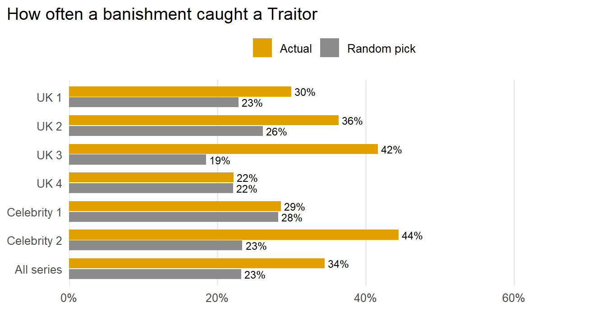
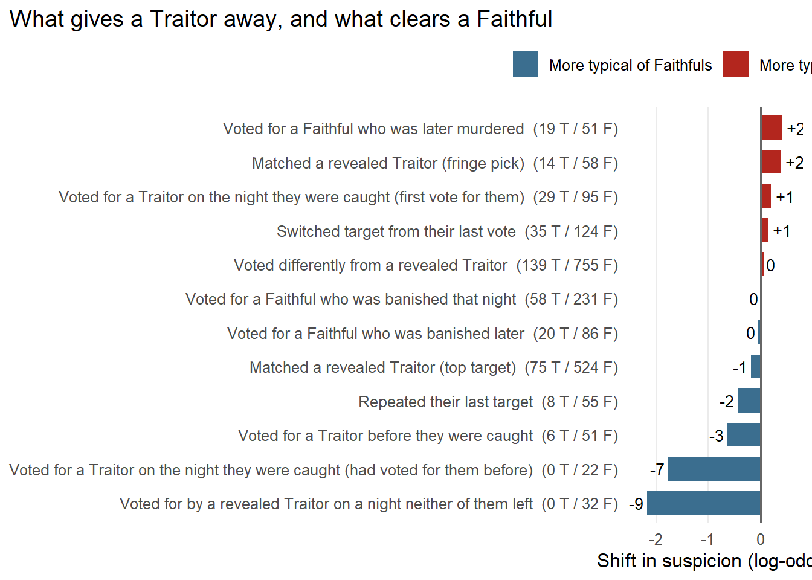
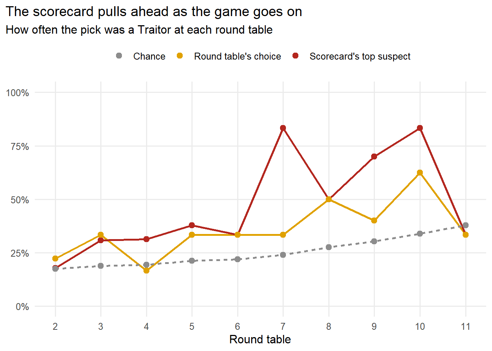
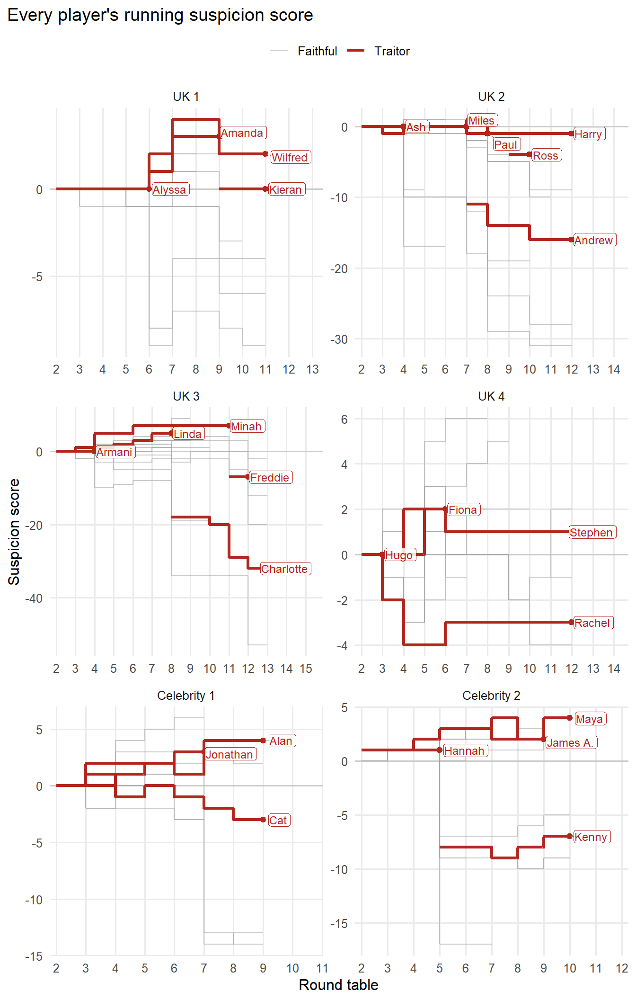
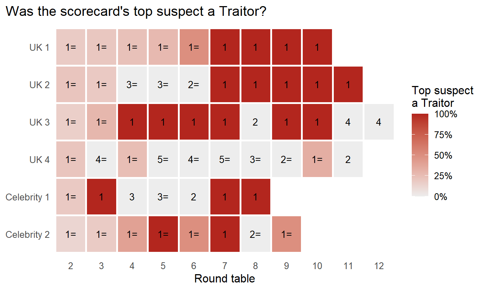

title: “Traitors UK: Can a Faithful spot a Traitor from the votes alone?” subtitle: “Testing a running suspicion score on every UK round table vote” description: “Across six UK series of The Traitors so far, the scorecard’s top suspect was a Traitor 45% of the time, nearly twice as likely as a random pick.” author: “Dr Will Ball” # The image used in link previews when the post is shared (made by make_header.R) image: share.png lang: en-GB date: today format: html: # Header image, made by make_header.R (run that first; it saves header.png # into this folder). The title and subtitle sit on top of it in white. title-block-banner: header.png title-block-banner-color: white toc: true code-fold: true code-summary: “Show the code” embed-resources: true theme: cosmo fig-width: 9 fig-height: 5.5 execute: warning: false message: false —
Before she went into the castle for the second series of The Celebrity Traitors, Professor of Mathematics Hannah Fry recorded a YouTube video, How would Alan Turing have played the Traitors?, released after the show. In it she sets out a way for a Faithful to work out who the Traitors are: the first part of her strategy is to identify how Traitors’ voting patterns differ from Faithfuls’, then keep a running score of who is under most suspicion. She didn’t get much chance to test it, because she was recruited as a Traitor herself.
She also had less data to look back on, so I thought I’d have a go at building that system for myself, and testing how well it identifies Traitors compared with pure chance (picking someone at random) and with the votes actually cast at each round table in every UK series so far.
I analysed 768 votes across all six series (four regular, two celebrity), covering 61 round tables.
library(tidyverse)
Warning: package 'tidyverse' was built under R version 4.4.3
Warning: package 'ggplot2' was built under R version 4.4.3
Warning: package 'dplyr' was built under R version 4.4.3
── Attaching core tidyverse packages ──────────────────────── tidyverse 2.0.0 ──
✔ dplyr 1.2.0 ✔ readr 2.1.4
✔ forcats 1.0.0 ✔ stringr 1.5.0
✔ ggplot2 4.0.0 ✔ tibble 3.2.1
✔ lubridate 1.9.2 ✔ tidyr 1.3.0
✔ purrr 1.0.2
── Conflicts ────────────────────────────────────────── tidyverse_conflicts() ──
✖ dplyr::filter() masks stats::filter()
✖ dplyr::lag() masks stats::lag()
ℹ Use the conflicted package (<http://conflicted.r-lib.org/>) to force all conflicts to become errors
library(rvest)
Warning: package 'rvest' was built under R version 4.4.3
Attaching package: 'rvest'
The following object is masked from 'package:readr':
guess_encoding
library(httr2)
Warning: package 'httr2' was built under R version 4.4.3
library(knitr)# ggrepel is also used (for non-overlapping labels): install.packages("ggrepel")# Wikipedia asks scripts to say who they are, so requests carry a descriptive user agentwiki_user_agent <-"traitors-voting-analysis (personal R project)"pause_between_pages <-1# seconds to wait between pages, to be polite# Some steps break ties at random; fixing the seed makes every run identicalset.seed(2026)# One look for every plottheme_set(theme_minimal(base_size =12) +theme(plot.title.position ="plot", legend.position ="top",panel.grid.minor =element_blank()))colours <-c(traitor ="#B3261E", faithful ="#3B6E8F", table ="#E0A100", chance ="grey55")
The data
Wikipedia keeps a voting table for every series: one row per player, one column per round table, and each cell says who that player voted to banish. I scraped those tables and reshape them into one row per vote.
Two things aren’t in the tables, so I keep them as short lists by hand: who the Traitors were (and when recruits switched sides), and who held a double vote.
# ---- Which pages to scrape (add new series here) -------------------------------pages <-tribble(~series, ~page,"UK 1", "The_Traitors_(British_TV_series)_series_1","UK 2", "The_Traitors_(British_TV_series)_series_2","UK 3", "The_Traitors_(British_TV_series)_series_3","UK 4", "The_Traitors_(British_TV_series)_series_4","Celebrity 1", "The_Celebrity_Traitors_series_1","Celebrity 2", "The_Celebrity_Traitors_series_2")# ---- Every Traitor, and the first episode they voted as one --------------------# Original Traitors are 1. A recruit's number is the first episode whose round# table they attended as a Traitor, so their earlier votes count as Faithful votes.traitors <-tribble(~series, ~name, ~traitor_from_episode,"UK 1", "Wilfred Webster", 1,"UK 1", "Amanda Lovett", 1,"UK 1", "Alyssa Chan", 1,"UK 1", "Kieran Tompsett", 11,"UK 2", "Harry Clark", 1,"UK 2", "Paul Gorton", 1,"UK 2", "Ash Bibi", 1,"UK 2", "Miles Asteri", 1,"UK 2", "Andrew Jenkins", 8,"UK 2", "Ross Carson", 10,"UK 3", "Armani Gouveia", 1,"UK 3", "Linda Rands", 1,"UK 3", "Minah Shannon", 1,"UK 3", "Charlotte Berman", 8,"UK 3", "Freddie Fraser", 11,"UK 4", "Rachel Duffy", 1,"UK 4", "Stephen Libby", 1,"UK 4", "Hugo Lodge", 1,"UK 4", "Fiona Hughes", 1,"Celebrity 1", "Alan Carr", 1,"Celebrity 1", "Jonathan Ross", 1,"Celebrity 1", "Cat Burns", 1,"Celebrity 2", "Maya Jama", 1,"Celebrity 2", "Richard E. Grant", 1,"Celebrity 2", "James Acaster", 1,"Celebrity 2", "Hannah Fry", 4,"Celebrity 2", "King Kenny", 6)# ---- Double votes (the dagger) ---------------------------------------------------# vote_in_episode = which round table that episode (NA = all of them)double_votes <-tribble(~series, ~episode, ~vote_in_episode, ~name,"UK 4", 10, NA, "James","Celebrity 2", 8, NA, "King Kenny","Celebrity 2", 9, 1, "King Kenny")# ---- Helpers ---------------------------------------------------------------------# Download one page and return its HTMLfetch_page <-function(page) {Sys.sleep(pause_between_pages)request(str_c("https://en.wikipedia.org/wiki/", page)) %>%req_user_agent(wiki_user_agent) %>%req_retry(max_tries =3) %>%req_perform() %>%resp_body_html()}# Strip footnote markers like [a], standardise dashes and tidy spacesclean_cell <-function(x) { x %>%str_remove_all("\\[[^\\]]*\\]") %>%str_replace_all("\\p{Pd}", "-") %>%str_squish()}# Read every table on the page; merged cells are copied into each column they coverpage_tables <-function(html) { html %>%html_elements("table.wikitable") %>%map(\(t) html_table(t, header =FALSE, convert =FALSE) %>%mutate(across(everything(), clean_cell)))}# The voting table is the one with "Episode", "Banishment" and "Vote" rowspick_voting_table <-function(tables) { is_voting <-map_lgl(tables, \(d)any(str_detect(d[[1]], "^Episode"), na.rm =TRUE) &&any(str_detect(d[[1]], "^Banish"), na.rm =TRUE) &&any(d[[1]] =="Vote", na.rm =TRUE)) candidates <- tables[is_voting] candidates[[which.max(map_int(candidates, nrow))]]}# Match a short name in the table ("James A.") to a full name ("James Acaster")match_full_name <-function(short, full_names) { parts <-str_match(short, "^(.+?)\\s+([A-Z])\\.?$") first <-coalesce(parts[, 2], short) initial <- parts[, 3] hit <-map_lgl(str_split(full_names, "\\s+"), \(w) first %in% w && (is.na(initial) ||any(str_starts(setdiff(w, first), initial))))if (sum(hit) ==1) full_names[hit] elseNA_character_}# Link my hand-kept lists (full names) to the names used in the voting tablelink_to_players <-function(lookup, players) { lookup %>%inner_join(players %>%distinct(series, player), by ="series",relationship ="many-to-many") %>%filter(player == name |map2_lgl(player, name, \(p, n) identical(match_full_name(p, n), n)))}# Cells that record someone leaving, and cells that aren't votesfate_pattern <-"^(Murdered|Banished|Winner|Runner-up|Eliminated|Withdrew|Left|Removed|Disqualified)"non_vote_pattern <-"^(No ?vote|None|Immune|Shield|Ineligible|-|N/A)?$"is_vote <-function(x) !is.na(x) &!str_detect(x, fate_pattern) &!str_detect(x, non_vote_pattern)# ---- Turn one page into tidy tables ----------------------------------------------parse_series <-function(series, page) { d <-fetch_page(page) %>%page_tables() %>%pick_voting_table() ep_row <-which(str_detect(d[[1]], "^Episode"))[1] ban_row <-which(str_detect(d[[1]], "^Banish"))[1] vote_row <-which(d[[1]] =="Vote")[1]# Row labels span the first few columns; player names sit in the last of them label_cols <-which(unlist(d[ep_row, ]) =="Episode") name_col <-names(d)[max(label_cols)] data_cols <-names(d)[-label_cols]# One row per table column: its episode, who was banished, and the published tally columns <-tibble(col = data_cols,episode =as.integer(str_extract(unlist(d[ep_row, data_cols]), "^\\d+$")),banished =unlist(d[ban_row, data_cols]),tally =str_remove_all(unlist(d[vote_row, data_cols]), "\\s") ) %>%filter(!is.na(episode))# Reshape to one row per player per column cells <- d[seq(vote_row +1, nrow(d)), ] %>%rename(player =all_of(name_col)) %>%filter(!is.na(player), player !="") %>%select(player, all_of(columns$col)) %>%pivot_longer(-player, names_to ="col", values_to ="cell")# Some episodes are split into two identical columns for layout reasons; keep one columns <- cells %>%arrange(player) %>%summarise(signature =str_c(player, "=", coalesce(cell, ""), collapse =";"), .by = col) %>%right_join(columns, by ="col") %>%mutate(signature =str_c(banished, tally, signature, sep ="|")) %>%distinct(episode, signature, .keep_all =TRUE) %>%select(-signature) cells <- cells %>%semi_join(columns, by ="col") votes <- cells %>%filter(is_vote(cell)) %>%select(col, voter = player, voted_for = cell)# Number the round tables and flag ties and revotes. A revote follows a tie# (sometimes in the next episode); a tied revote is settled by chance instead. round_tables <- columns %>%semi_join(votes, by ="col") %>%mutate(round_table =row_number()) %>%mutate(vote_in_episode =row_number(), .by = episode) %>%mutate(tie =str_detect(banished, "^Tie"),revote =accumulate(lag(tie, default =FALSE), \(prev_revote, prev_tie) prev_tie &!prev_revote,.init =FALSE)[-1], series,banished =if_else(tie |!is_vote(banished), NA_character_, banished)) votes <- votes %>%inner_join(round_tables %>%select(col, round_table, episode, vote_in_episode, revote),by ="col") %>%transmute(series, round_table, episode, vote_in_episode, revote, voter, voted_for)# How each player left the game, read from their last "Murdered"/"Banished" cell players <- cells %>%summarise(fate_text =last(cell[str_detect(coalesce(cell, ""), fate_pattern)]), .by = player) %>%transmute(series, player,fate =str_extract(fate_text, "^[A-Za-z-]+"),fate_episode =as.integer(str_extract(fate_text, "\\d+")))list(votes = votes,round_tables = round_tables %>%select(series, round_table, episode, vote_in_episode, banished, tie, revote, tally),players = players)}# ---- Scrape all six series -----------------------------------------------------------scraped <-map2(pages$series, pages$page, parse_series)
Warning in table_fill(cells, trim = trim): NAs introduced by coercion
Warning in table_fill(cells, trim = trim): NAs introduced by coercion
Warning in table_fill(cells, trim = trim): NAs introduced by coercion
Warning in table_fill(cells, trim = trim): NAs introduced by coercion
Warning in table_fill(cells, trim = trim): NAs introduced by coercion
Warning in table_fill(cells, trim = trim): NAs introduced by coercion
votes <- scraped %>%map("votes") %>%list_rbind()round_tables <- scraped %>%map("round_tables") %>%list_rbind()players <- scraped %>%map("players") %>%list_rbind()# ---- Add each voter's role at the time, and the double votes --------------------------traitor_links <-link_to_players(traitors, players) %>%select(series, player, traitor_from_episode)# A player is a Traitor from their traitor_from_episode onwards, a Faithful beforerole_at <-function(series, player, episode) {tibble(series, player, episode) %>%left_join(traitor_links, by =c("series", "player")) %>%mutate(role =if_else(!is.na(traitor_from_episode) & episode >= traitor_from_episode,"Traitor", "Faithful")) %>%pull(role)}double_vote_keys <-link_to_players(double_votes, players) %>%inner_join(votes, by =c("series", "episode", "player"="voter")) %>%filter(is.na(vote_in_episode.x) | vote_in_episode.x == vote_in_episode.y) %>%distinct(series, round_table, voter = player) %>%mutate(double_vote =TRUE)votes <- votes %>%mutate(voter_role =role_at(series, voter, episode),voted_for_role =role_at(series, voted_for, episode)) %>%left_join(double_vote_keys, by =c("series", "round_table", "voter")) %>%mutate(double_vote =coalesce(double_vote, FALSE))# ---- Check: recount every round table and compare with Wikipedia's tally -----------tally_mismatches <- votes %>%count(series, round_table, voted_for, wt =if_else(double_vote, 2L, 1L)) %>%arrange(series, round_table, desc(n)) %>%summarise(recount =str_c(n, collapse ="-"), .by =c(series, round_table)) %>%left_join(round_tables, by =c("series", "round_table")) %>%filter(recount != tally)# I leave out revotes from here on: the choice is forced between the tied playersfirst_votes <- votes %>%filter(!revote) %>%mutate(traitor = voter_role =="Traitor")
That gives 768 votes across 61 round tables. Recounting the votes reproduces Wikipedia’s published tally at every round table (3 mismatches), and a second source, TraitorBase, agreed on every vote that both sources recorded.
Round tables mostly miss
The round table is a collective decision: everyone votes, and whoever gets the most votes is banished. So how often does the group get it right?
# Who was in the room at each round table, and how many of them were Traitorstable_makeup <- first_votes %>%summarise(players =n(), traitors_at_table =sum(traitor), .by =c(series, round_table))# Every round table that ended in a banishment (revotes included). A revote's# room is the one at the tied vote just before it.banishments <- round_tables %>%filter(!is.na(banished)) %>%mutate(banished_role =role_at(series, banished, episode),room =if_else(revote, round_table - 1L, round_table)) %>%left_join(table_makeup, by =c("series", "room"="round_table")) %>%# If the banished player had been picked at random from the room, this is the# chance they would have been a Traitormutate(caught_traitor = banished_role =="Traitor",chance = traitors_at_table / players)pct_traitor_banished <-mean(banishments$caught_traitor)pct_chance_banished <-mean(banishments$chance)banish_summary <- banishments %>%summarise(Actual =mean(caught_traitor), `Random pick`=mean(chance), .by = series) %>%bind_rows(banishments %>%summarise(Actual =mean(caught_traitor), `Random pick`=mean(chance)) %>%mutate(series ="All series")) %>%mutate(series =factor(series, levels =c(pages$series, "All series")))# How often Faithfuls voted for a Traitor, against what voting at random would give# (the Traitors' share of the other players at the table)faithful_accuracy <- first_votes %>%left_join(table_makeup, by =c("series", "round_table")) %>%filter(!traitor) %>%summarise(actual =mean(voted_for_role =="Traitor"),random =mean(traitors_at_table / (players -1)))
Across all six series, only 34% of banishments removed a Traitor. That sounds poor, but it needs setting against the odds. Traitors are a small minority, usually three or four in a room of up to twenty, and early on there is very little to go on. If the banished player had simply been drawn from a hat, 23% of banishments would have caught a Traitor.
banish_summary %>%pivot_longer(c(Actual, `Random pick`), names_to ="pick", values_to ="share") %>%# Dodged bars stack upwards, so list "Random pick" first to put "Actual" on topmutate(pick =factor(pick, levels =c("Random pick", "Actual"))) %>%ggplot(aes(share, fct_rev(series), fill = pick)) +geom_col(position =position_dodge(width =0.75), width =0.7) +geom_text(aes(label = scales::percent(share, 1)),position =position_dodge(width =0.75), hjust =-0.15, size =3.2) +scale_x_continuous(labels = scales::label_percent(), limits =c(0, 0.7),expand =expansion(c(0, 0.02))) +scale_fill_manual(values =c(Actual = colours[["table"]], `Random pick`= colours[["chance"]]),breaks =c("Actual", "Random pick")) +labs(title ="How often a banishment caught a Traitor",x =NULL, y =NULL, fill =NULL) +theme(panel.grid.major.y =element_blank())

Figure 1: Share of banishments that removed a Traitor, against the share expected if the banished player had been picked at random from the room.
So the group beats chance overall, but not by a wide margin, and in some series it did no better than a random pick. Individual votes tell the same story: Faithfuls voted for a Traitor 28% of the time, against 22% if they had picked someone at random. With so few Traitors and so little information, that is perhaps to be expected. The question is whether the votes themselves contain information that a careful Faithful could use.
Traitors vote differently, in small ways
Every vote is evidence. I tag each one with the behaviours a Faithful could see, using only what they would know at that point: who voted for whom, who was banished and what they revealed, and who was murdered (victims are always Faithful). Some behaviours only become visible later, when a role is revealed, so each one records when it becomes known.
For each behaviour I compare how often it appears in Traitors’ votes and Faithfuls’ votes. The ratio, on a log scale, becomes its points: positive means more typical of Traitors, negative more typical of Faithfuls.
unit <-0.25# log-odds per point: smaller makes the points finersmoothing <-1# added to every count so rare behaviours don't get extreme points# ---- Reveals: who was shown to be what, and after which round table ---------------banished_at_rt <- round_tables %>%filter(!is.na(banished)) %>%transmute(series, player = banished, how ="banished",reveal_episode = episode, known_after = round_table)# Murders are revealed at breakfast, so they are known before that episode's round# table. Some banishments (settled by chance after a tied revote) are added here too.other_reveals <- players %>%filter(fate %in%c("Banished", "Murdered")) %>%anti_join(banished_at_rt, by =c("series", "player")) %>%transmute(series, player, how =str_to_lower(fate), reveal_episode = fate_episode) %>%inner_join(round_tables %>%select(series, round_table, episode),by ="series", relationship ="many-to-many") %>%filter(if_else(how =="murdered", episode < reveal_episode, episode <= reveal_episode)) %>%summarise(known_after =max(round_table), .by =c(series, player, how, reveal_episode))reveals <-bind_rows(banished_at_rt, other_reveals) %>%mutate(role =if_else(how =="banished",role_at(series, player, reveal_episode), "Faithful"))# ---- Context for each vote ------------------------------------------------------# Votes each target received (double votes count twice) and the night's top targettally <- first_votes %>%count(series, round_table, voted_for, wt =if_else(double_vote, 2L, 1L), name ="received") %>%mutate(top = received ==max(received), .by =c(series, round_table))present <- first_votes %>%distinct(series, round_table, player = voter)v <- first_votes %>%left_join(tally, by =c("series", "round_table", "voted_for")) %>%arrange(series, voter, round_table) %>%# Their previous target, and whether that person is still in the gamemutate(prev_target =lag(voted_for), .by =c(series, voter)) %>%mutate(voted_for_them_before =row_number() >1, .by =c(series, voter, voted_for)) %>%left_join(present %>%mutate(prev_still_in =TRUE),by =c("series", "round_table", "prev_target"="player")) %>%# What the target later turned out to beleft_join(reveals %>%select(series, voted_for = player, t_role = role, t_how = how,t_episode = reveal_episode, t_known = known_after),by =c("series", "voted_for"))# ---- The behaviours ------------------------------------------------------------------# 1. Consistency: did they stick with their last suspect (if still in) or switch?consistency <- v %>%filter(!is.na(prev_still_in)) %>%transmute(series, round_table, voter, traitor, group ="Consistency",behaviour =if_else(voted_for == prev_target, "Repeated their last target","Switched target from their last vote"),known_after = round_table)# 2. Who their target turned out to be (scored once the target's role is revealed)target_outcome <- v %>%filter(!is.na(t_role)) %>%transmute(series, round_table, voter, traitor, group ="Target",behaviour =case_when( t_role =="Traitor"& t_episode == episode &!voted_for_them_before ~"Voted for a Traitor on the night they were caught (first vote for them)", t_role =="Traitor"& t_episode == episode ~"Voted for a Traitor on the night they were caught (had voted for them before)", t_role =="Traitor"~"Voted for a Traitor before they were caught", t_how =="murdered"~"Voted for a Faithful who was later murdered", t_episode == episode ~"Voted for a Faithful who was banished that night",.default ="Voted for a Faithful who was banished later"),known_after = t_known)# 3. Agreement with Traitors, scored once each Traitor is revealedrevealed_traitor_votes <- v %>%inner_join(reveals %>%filter(role =="Traitor") %>%select(series, voter = player, rt_known = known_after),by =c("series", "voter")) %>%select(series, round_table, rt = voter, rt_target = voted_for, rt_known)agreement <- v %>%inner_join(revealed_traitor_votes, by =c("series", "round_table"),relationship ="many-to-many") %>%filter(voter != rt, voted_for != rt) %>%transmute(series, round_table, voter, traitor, group ="Agreement",behaviour =case_when(voted_for != rt_target ~"Voted differently from a revealed Traitor", top ~"Matched a revealed Traitor (top target)",.default ="Matched a revealed Traitor (fringe pick)"),known_after = rt_known)behaviours <-bind_rows(consistency, target_outcome, agreement)# 4. Who a revealed Traitor voted for. Once a Traitor is unmasked, I look back at# their votes. This behaviour belongs to the person who RECEIVED the vote, so# here `voter` is the player being scored. I only count ordinary nights, when# neither the Traitor nor their target left: a Traitor's parting vote on the# night they're banished doesn't clear anyone.banished_ep <- reveals %>%filter(how =="banished") %>%select(series, player, banished_episode = reveal_episode)voted_for_by_traitor <- v %>%filter(traitor) %>%inner_join(reveals %>%filter(role =="Traitor") %>%select(series, voter = player, rt_known = known_after),by =c("series", "voter")) %>%left_join(banished_ep %>%rename(voter = player, voter_banished = banished_episode),by =c("series", "voter")) %>%left_join(banished_ep %>%rename(voted_for = player, target_banished = banished_episode),by =c("series", "voted_for")) %>%filter(coalesce(voter_banished != episode, TRUE), coalesce(target_banished != episode, TRUE)) %>%transmute(series, round_table, voter = voted_for, traitor = voted_for_role =="Traitor",group ="Voted for by a Traitor",behaviour ="Voted for by a revealed Traitor on a night neither of them left",known_after = rt_known)# ---- Points: log likelihood ratio of each behaviour, in units of `unit` ---------------# Within each group, compare each behaviour's share of Traitors' votes with its# share of Faithfuls' votes. Smoothing stops rare behaviours getting extreme points.points_from <-function(b) { b %>%count(group, behaviour, traitor) %>%complete(nesting(group, behaviour), traitor, fill =list(n =0)) %>%pivot_wider(names_from = traitor, values_from = n, names_prefix ="n_") %>%mutate(k =n(),llr =log(((n_TRUE + smoothing) / (sum(n_TRUE) + smoothing * k)) / ((n_FALSE + smoothing) / (sum(n_FALSE) + smoothing * k))),.by = group) %>%transmute(group, behaviour, traitor_votes = n_TRUE, faithful_votes = n_FALSE, llr, points =round(llr / unit))}# Points for being voted for by a Traitor. There is no "other" category to compare# with, so I compare how often Traitors and Faithfuls receive such a vote per round# table they attend (each vote cast = one player at one round table).received_points_from <-function(r, fv) { exposure <- fv %>%count(traitor, name ="exposure") r %>%count(group, behaviour, traitor) %>%complete(nesting(group, behaviour), traitor =c(FALSE, TRUE), fill =list(n =0)) %>%left_join(exposure, by ="traitor") %>%pivot_wider(names_from = traitor, values_from =c(n, exposure)) %>%transmute(group, behaviour, traitor_votes = n_TRUE, faithful_votes = n_FALSE,llr =log(((n_TRUE + smoothing) / (exposure_TRUE +2* smoothing)) / ((n_FALSE + smoothing) / (exposure_FALSE +2* smoothing))),points =round(llr / unit))}# Everything that gets scored, and the points learned from a chosen set of seriesscored_behaviours <-bind_rows(behaviours, voted_for_by_traitor)all_points_from <-function(use_series) {bind_rows(points_from(behaviours %>%filter(series %in% use_series)),received_points_from(voted_for_by_traitor %>%filter(series %in% use_series), first_votes %>%filter(series %in% use_series)))}scorecard <-all_points_from(pages$series)
scorecard %>%mutate(label =str_c(behaviour, " (", traitor_votes, " T / ", faithful_votes, " F)"),# Order the bars from most typical of Traitors (top) to least (bottom)label =fct_reorder(label, llr),side =if_else(llr >0, "More typical of Traitors", "More typical of Faithfuls"),points_text =if_else(points ==0, "0", sprintf("%+d", as.integer(points)))) %>%ggplot(aes(llr, label, fill = side)) +geom_col(width =0.7) +geom_vline(xintercept =0, colour ="grey40") +geom_text(aes(label = points_text, hjust =if_else(llr >0, -0.25, 1.25)), size =3.5) +scale_x_continuous(expand =expansion(mult =0.15)) +scale_fill_manual(values =c("More typical of Traitors"= colours[["traitor"]],"More typical of Faithfuls"= colours[["faithful"]])) +labs(title ="What gives a Traitor away, and what clears a Faithful",x ="Shift in suspicion (log-odds)", y =NULL, fill =NULL) +theme(panel.grid.major.y =element_blank())

Figure 2: The scorecard. Bars show how much each behaviour shifts suspicion; labels show its points. Counts are Traitor votes / Faithful votes (for the ‘voted for by’ row, votes received).
The clearest signal is a clearing one. 22 times a Faithful kept voting for a Traitor right up to the night that Traitor was caught. No Traitor ever has. Traitors do turn on each other, but only once the game is up: they cast their first vote against a fellow Traitor on the night that Traitor goes.
The Traitors give away a second clearing signal themselves. Once a Traitor is revealed, I look back at who they voted for. On nights when neither the Traitor nor their target left, a Traitor voted for a fellow Traitor 0 times out of 32; every other time, their target was a Faithful. The exception is a Traitor’s parting shot on the night they’re banished, which sometimes does land on a fellow Traitor and so clears no one.
On the Traitor side, the tells are weaker but consistent. Traitors switch targets more often than Faithfuls, they tend to vote for people who are later murdered, and they sometimes share a fringe pick with a fellow Traitor.
The score works, once a Traitor is unmasked
To test the scorecard fairly, I learn the points from five series and use them to rank every player before each round table in the sixth, using only what was known at the time. I repeat this for each series in turn.
# Each player's running score before a round table: the points from all their# earlier votes whose meaning was known by thenscore_before <-function(b, cands, pts) { b %>%inner_join(pts %>%select(group, behaviour, points), by =c("group", "behaviour")) %>%filter(points !=0) %>%select(series, player = voter, b_rt = round_table, known_after, points) %>%right_join(cands, by =c("series", "player"), relationship ="many-to-many") %>%mutate(points =if_else(!is.na(b_rt) & b_rt < round_table & known_after < round_table, points, 0)) %>%summarise(score =sum(points), .by =c(series, round_table, player, traitor))}# Players at each round table to rank (not the first round table, when there's# nothing to go on, and only where both Traitors and Faithfuls are present)candidates <- first_votes %>%distinct(series, round_table, player = voter, traitor) %>%filter(round_table >min(round_table), .by = series) %>%filter(any(traitor) &any(!traitor), .by =c(series, round_table))# Leave each series out in turn: learn points from the other five, score this oneheldout_scores <-unique(candidates$series) %>%map(\(s) score_before(scored_behaviours %>%filter(series == s), candidates %>%filter(series == s),all_points_from(setdiff(pages$series, s)))) %>%list_rbind()# Was the top suspect a Traitor? (Joint top suspects count as a share.)round_table_number <- round_tables %>%filter(!revote) %>%mutate(round_table_number =row_number(), .by = series) %>%select(series, round_table, round_table_number)traitors_revealed_by <-function(s, rt) {sum(reveals$series == s & reveals$role =="Traitor"& reveals$known_after < rt)}# The round table's own pick: the person with the most votes that nighttable_pick <- tally %>%filter(top) %>%left_join(first_votes %>%distinct(series, round_table, voted_for, voted_for_role),by =c("series", "round_table", "voted_for")) %>%summarise(table_hit =mean(voted_for_role =="Traitor"), .by =c(series, round_table))by_round_table <- heldout_scores %>%mutate(rank =min_rank(desc(score)),tied =duplicated(score) |duplicated(score, fromLast =TRUE),.by =c(series, round_table)) %>%summarise(score_hit =mean(traitor[score ==max(score)]),chance =mean(traitor),best_traitor_rank =str_c(min(rank[traitor]),if_else(tied[traitor][which.min(rank[traitor])], "=", "")),.by =c(series, round_table)) %>%left_join(table_pick, by =c("series", "round_table")) %>%left_join(round_table_number, by =c("series", "round_table")) %>%mutate(traitors_revealed =map2_int(series, round_table, traitors_revealed_by),series =factor(series, levels = pages$series))overall <- by_round_table %>%summarise(score =mean(score_hit), table =mean(table_hit), chance =mean(chance))# From a Faithful's own seat: they know they're Faithful, so they rank everyone# except themselves. Averaged over every Faithful at every round table.faithful_view <- heldout_scores %>%filter(!traitor) %>%distinct(series, round_table, me = player) %>%inner_join(heldout_scores, by =c("series", "round_table"), relationship ="many-to-many") %>%filter(player != me) %>%summarise(hit =mean(traitor[score ==max(score)]), chance =mean(traitor),.by =c(series, round_table, me)) %>%# average over the Faithfuls at each round table, then over round tables,# so every round table counts equally (as in the other results)summarise(hit =mean(hit), chance =mean(chance), .by =c(series, round_table)) %>%summarise(hit =mean(hit), chance =mean(chance))after_reveal <- by_round_table %>%mutate(revealed =if_else(traitors_revealed ==0, "No Traitor revealed yet","At least one Traitor revealed")) %>%summarise(round_tables =n(), score =mean(score_hit), table =mean(table_hit),chance =mean(chance), .by = revealed)
Across 55 round tables, the scorecard’s top suspect was a Traitor 45% of the time. Picking at random would give 24%, and the round tables’ own choice was a Traitor 36% of the time. From a Faithful’s own seat, leaving themselves out of the ranking, it’s 48% against 27% by chance.
The catch is timing. Most of the evidence only unlocks when a role is revealed, so until the first Traitor is unmasked the score is no better than guessing. After that, it pulls well ahead.
Table 1: How often the pick was a Traitor, before and after the first Traitor is revealed
Round tables
Scorecard’s top suspect
Round table’s choice
Chance
No Traitor revealed yet
14
22%
38%
22%
At least one Traitor revealed
41
53%
35%
25%
by_round_table %>%summarise(`Scorecard's top suspect`=mean(score_hit),`Round table's choice`=mean(table_hit),Chance =mean(chance),n_series =n(), .by = round_table_number) %>%filter(n_series >=3) %>%pivot_longer(-c(round_table_number, n_series), names_to ="pick", values_to ="hit") %>%ggplot(aes(round_table_number, hit, colour = pick)) +geom_line(aes(linetype = pick =="Chance"), linewidth =1, show.legend =FALSE) +geom_point(size =2.5) +scale_x_continuous(breaks =1:20) +scale_y_continuous(labels = scales::label_percent(), limits =c(0, 1)) +scale_colour_manual(values =c("Scorecard's top suspect"= colours[["traitor"]],"Round table's choice"= colours[["table"]],"Chance"= colours[["chance"]])) +labs(title ="The scorecard pulls ahead as the game goes on",subtitle ="How often the pick was a Traitor at each round table",x ="Round table", y =NULL, colour =NULL)

Figure 3: Averaged across series. Only round table numbers reached by at least three series are shown.
Here is what that looks like as a running score. Each line is one player’s suspicion score going into each round table, using points learned from the other series. Traitors are in red; recruits turn red from the round table where they had switched sides.
# Each player's score at each round table, with their role at the timerunning_scores <- heldout_scores %>%left_join(round_table_number, by =c("series", "round_table")) %>%left_join(traitor_links %>%distinct(series, player) %>%mutate(ever_traitor =TRUE),by =c("series", "player")) %>%mutate(ever_traitor =coalesce(ever_traitor, FALSE),role =if_else(traitor, "Traitor", "Faithful"),series =factor(series, levels = pages$series)) %>%arrange(series, player, round_table_number)# Each score holds from its round table until the next, so draw the lines as# steps. Repeating each player's last score one round table later makes their# final level a flat step too (as in the header image).running_steps <- running_scores %>%bind_rows(running_scores %>%slice_max(round_table_number, n =1, by =c(series, player)) %>%mutate(round_table_number = round_table_number +1)) %>%arrange(series, player, round_table_number)# The red part of each Traitor's line: only the round tables where they were a# Traitor, so a recruit's line turns red from the point they switched sidestraitor_steps <- running_steps %>%filter(traitor)# Name each Traitor where their red line endstraitor_labels <- traitor_steps %>%slice_max(round_table_number, n =1, by =c(series, player))ggplot(running_steps, aes(round_table_number, score, group = player)) +geom_hline(yintercept =0, colour ="grey80") +# Everyone as thin grey steps (recruits too, before they switched)geom_step(aes(colour ="Faithful"), direction ="hv", linewidth =0.4, alpha =0.6) +# Traitors as thick red steps on topgeom_step(data = traitor_steps, aes(colour ="Traitor"), direction ="hv", linewidth =1.1) +geom_point(data = traitor_labels, colour = colours[["traitor"]], size =1.8) +# geom_label_repel() pushes labels apart so names don't overlap each other or# the points, and the white box keeps a name readable where it crosses a line.# A thin grey line joins any label that had to move back to its point. ggrepel::geom_label_repel(data = traitor_labels, aes(label = player),colour = colours[["traitor"]], fill =alpha("white", 0.85),size =3.2, label.size =0, label.padding =0.12,nudge_x =0.4, hjust =0, box.padding =0.3,force =3, max.overlaps =Inf, min.segment.length =0,segment.colour ="grey50", segment.size =0.3, seed =2026) +facet_wrap(~ series, ncol =2, scales ="free") +scale_x_continuous(breaks =2:20, expand =expansion(mult =c(0.03, 0.22))) +scale_colour_manual(values =c(Traitor = colours[["traitor"]], Faithful ="grey65")) +labs(title ="Every player's running suspicion score",x ="Round table", y ="Suspicion score", colour =NULL)

Figure 4: Running suspicion score before each round table (higher = more suspicious). Red = Traitor at the time; grey = Faithful. Each score holds until the next round table, so the lines move in steps. Traitors are named where their red line ends.
In several series a Traitor climbs to the top and stays there. Where the score fails, it is usually because a Traitor’s voting looked like a Faithful’s (Rachel S4), or because a recruit carried their honest Faithful record with them (Charlotte S3 & Kenny Celebrity 2).
Rachel’s track record in series 4 is genuinely impressive at fooling the scorecard, especially as she was a Traitor from the start. Kenny in Celebrity series 2 is another interesting case, but his score does trend upwards from the point of his recruitment.
Each tile below sums this up for one round table: the darker the red, the more certain the top suspect was a Traitor, and the number is where the best-placed Traitor ranked.
by_round_table %>%ggplot(aes(round_table_number, fct_rev(series), fill = score_hit)) +geom_tile(colour ="white", linewidth =1) +geom_text(aes(label = best_traitor_rank), size =3.5) +scale_x_continuous(breaks =2:20, expand =expansion(0)) +scale_fill_gradient(low ="#EDEDED", high = colours[["traitor"]],labels = scales::label_percent(), limits =c(0, 1)) +labs(title ="Was the scorecard's top suspect a Traitor?",x ="Round table", y =NULL, fill ="Top suspect\na Traitor") +theme(panel.grid =element_blank(), legend.position ="right")

Figure 5: Number = rank of the highest-placed Traitor (1 = top suspect; = means tied). Early on, everyone is tied on zero.
A version I can keep in my head
As a faithful in the castle you wouldn’t have R, so I’ve simplified the scorecard to eight rules worth +1, −1 or −3, and checked how much accuracy that gives up. It’s slightly more manageable but would still rely on a faithful keeping good records from each vote.
simple_rules <-tribble(~behaviour, ~points,"Switched target from their last vote", 1,"Voted for a Faithful who was later murdered", 1,"Voted for a Traitor on the night they were caught (first vote for them)", 1,"Matched a revealed Traitor (fringe pick)", 1,"Repeated their last target", -1,"Voted for a Traitor before they were caught", -1,"Voted for a Traitor on the night they were caught (had voted for them before)", -3,"Voted for by a revealed Traitor on a night neither of them left", -3) %>%left_join(distinct(scored_behaviours, group, behaviour), by ="behaviour")# Same test as before, but with these fixed pointssimple_hit <-score_before(scored_behaviours, candidates, simple_rules) %>%summarise(hit =mean(traitor[score ==max(score)]), .by =c(series, round_table)) %>%pull(hit) %>%mean()simple_rules %>%transmute(Behaviour = behaviour, Points =sprintf("%+d", as.integer(points))) %>%kable(align ="lr")
Behaviour
Points
Switched target from their last vote
+1
Voted for a Faithful who was later murdered
+1
Voted for a Traitor on the night they were caught (first vote for them)
+1
Matched a revealed Traitor (fringe pick)
+1
Repeated their last target
-1
Voted for a Traitor before they were caught
-1
Voted for a Traitor on the night they were caught (had voted for them before)
-3
Voted for by a revealed Traitor on a night neither of them left
-3
The simple version’s top suspect was a Traitor 44% of the time, close to the full scorecard’s 45%. (Its points were chosen with all six series in view, so that figure is a little flattering.)
What I take from this
Round tables are generally bad at finding Traitors: only 34% of banishments caught one.
Traitors and Faithfuls do vote differently, in small but consistent ways, and the strongest signals clear Faithfuls: a player who keeps voting for a Traitor until they’re caught is almost certainly Faithful, and so is anyone a revealed Traitor voted for on a night when neither of them left.
A running score picks out a Traitor far more often than chance or the round table, but only once the first Traitor has been revealed.
It’s a shortlist, not a verdict. The top suspect is still wrong a lot of the time, recruits carry a Faithful voting record that hides them, and in UK 4 it struggled throughout.
My plan: keep the score privately, vote with the room until the evidence builds up, and make my vote count once the first Traitor is out.
Caveats. Six series is a small sample, and most single behaviours aren’t statistically significant on their own; the held-out test is the better guide to whether the score works. Recruitment timings and double votes are entered by hand. Fire-pit votes and tie-break revotes are left out.